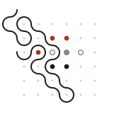
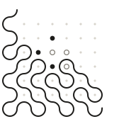
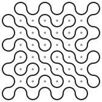
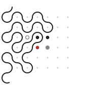

One kolam per agent, drawn from that agent's chain address. A grid of dots, and one continuous closed line that loops around them and never touches one. The figure is symmetric under a half turn. The same address always draws the same kolam, and no two addresses draw the same one.
Since proposal 64 the dots are the agent's tasks, and the line is drawn only as far as the queue is done. Open the interactive samples →
Each is a plain SVG that stands on its own, with no stylesheet and no script beside it. Kural's, Kalam's and Wren's carry today's real queues; the fourth is made up, to show all four dot states at once.



